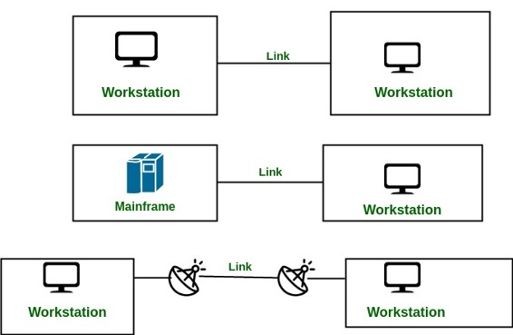

A network is two or more devices connected through a link. A link is a communication pathway that transfer data from one device to another. Devices can be a computer, printer or any other device that is capable to send and receive data. For visualization purpose, imagine any link as a line drawn between two points.
For communication to occur, two devices must be connected in some way to the same link at the same time. There are two possible types of connections:
- Point-to-Point Connection
- Multipoint Connection
Point-to-Point Connection :
- A point-to-point connection provides a dedicated link between two devices.
- The entire capacity of the link is reserved for transmission between those two devices.
- Most point-to-point connections use a actual length of wire or cable to connect the two end, but other options such as microwave or satellite links are also possible.
- Point to point network topology is considered to be one of the easiest and most conventional network
topologies. - It is also the simplest to establish and understand.
Example: Point-to-Point connection between remote control and Television for changing the channels.

Multipoint Connection :
- It is also called Multidrop configuration. In this connection two or more devices share a single link.
- More than two devices share the link that is the capacity of the channel is shared now. With shared capacity, there can be two possibilities in a Multipoint Line configuration:
Spatial Sharing: If several devices can share the link simultaneously, its called Spatially shared line configuration.
Temporal (Time) Sharing: If users must take turns using the link , then its called Temporally shared or Time Shared Line configuration.

References : http://mucins.weebly.com/21-line-configuration.html